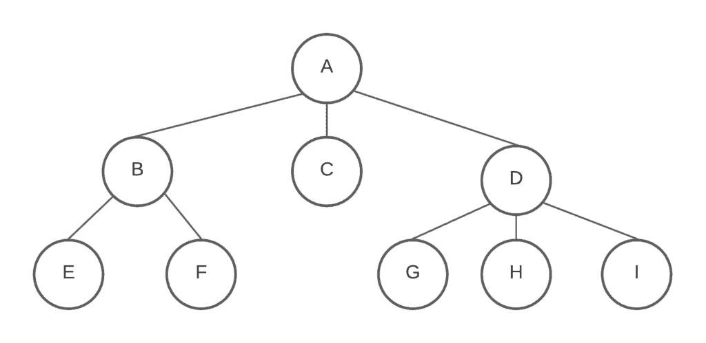

Blog
Search Trees, Graphs, and the Art of Finding the Best Path
 When you boil it down, most problems in computer science come down to choices. What to do next? Which path to take? How to do it efficiently? That’s where search trees and graph models come in. They’re like maps of decision-making: every node represents a possible state, and every branch represents a move you can make. A search tree shows this branching structure clearly. It’s basically your algorithm thinking out loud. A graph model takes that same concept but makes it more flexible: connections can go anywhere, not just downward, allowing loops, cycles, and complex relationships. This is what makes graphs powerful for modeling real-world systems from social networks to transportation routes.
Greedy Algorithms: The Quick, Not Always Right Option
A greedy algorithm is like grabbing the best looking option at every step, hoping it leads to the best overall result. In graph terms, Dijkstra’s algorithm for finding the shortest path is a perfect example. It always picks the next closest node until the destination is reached. Greedy methods are simple and fast, but they don’t always get the perfect solution. They lack the ability to look back or plan ahead. Sometimes, being greedy means you miss a better path that takes a little more patience to find.
The Knapsack Problem: When Greedy Isn’t Enough
The 0/1 Knapsack Problem is a perfect case study. You’ve got a set of items, each with a value and a weight, and a bag that can only carry so much. The question: which items should you take to maximize value? A greedy algorithm might grab the most valuable item or the one with the best value to weight ratio first but that can backfire. The combination that looks best locally isn’t always best globally. Dynamic programming solves this by breaking the problem down into smaller decisions: What’s the best value I can get with this capacity and these items? It fills a grid of possible answers, ensuring that every combination is considered efficiently. No guessing, no backtracking just structured optimization.